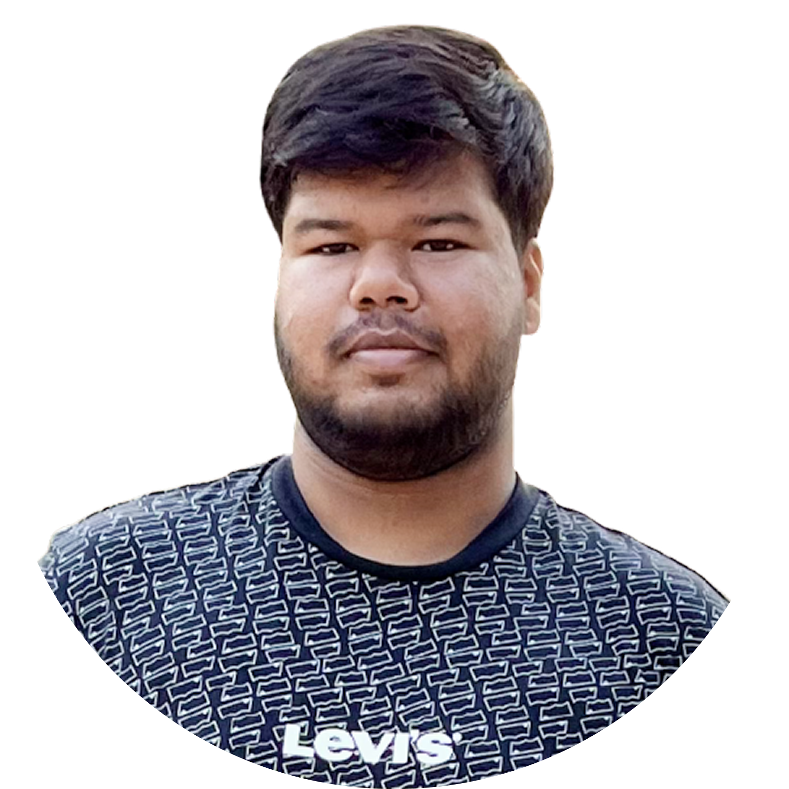
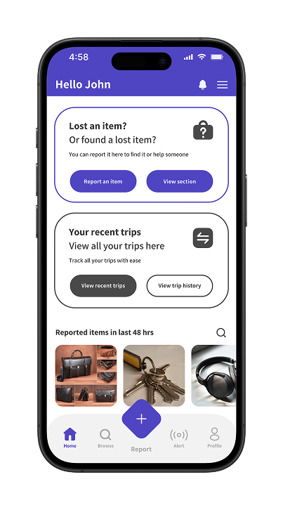
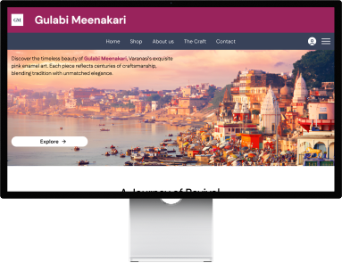
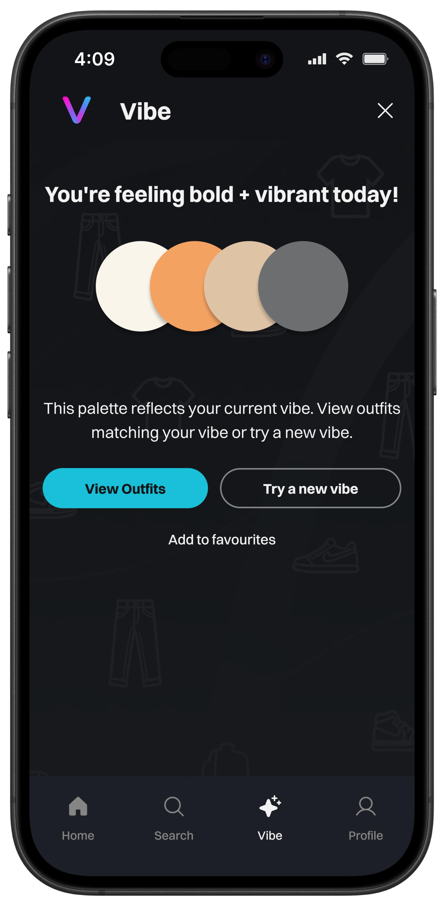
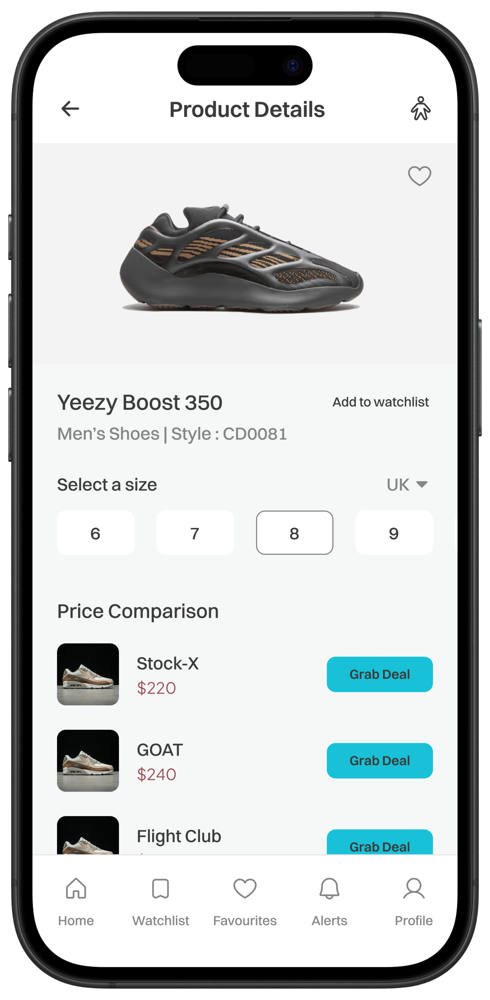
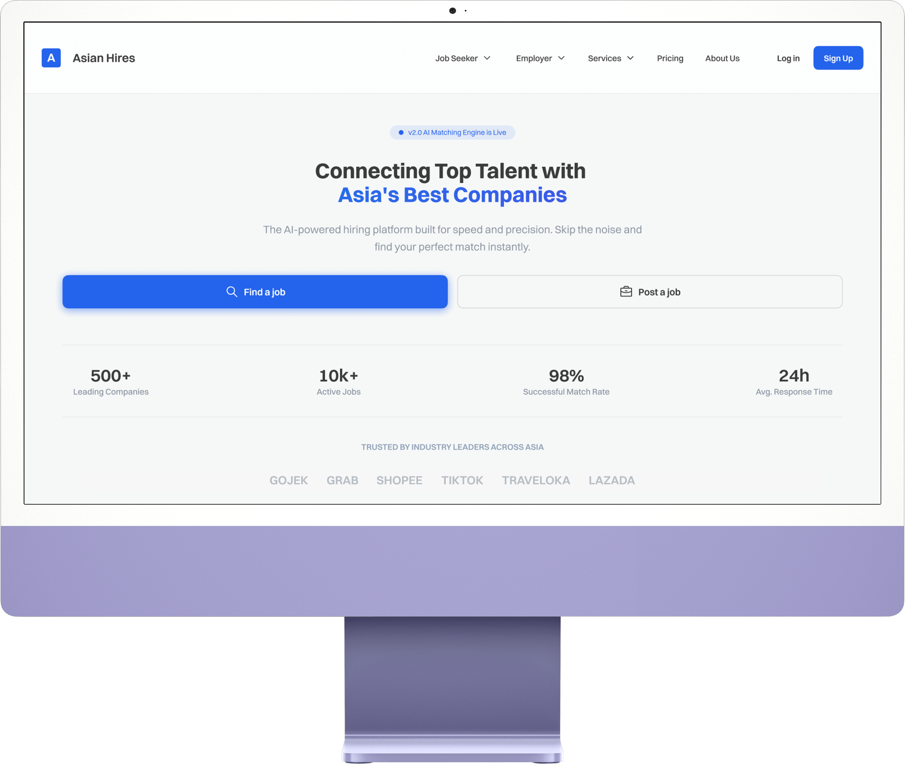
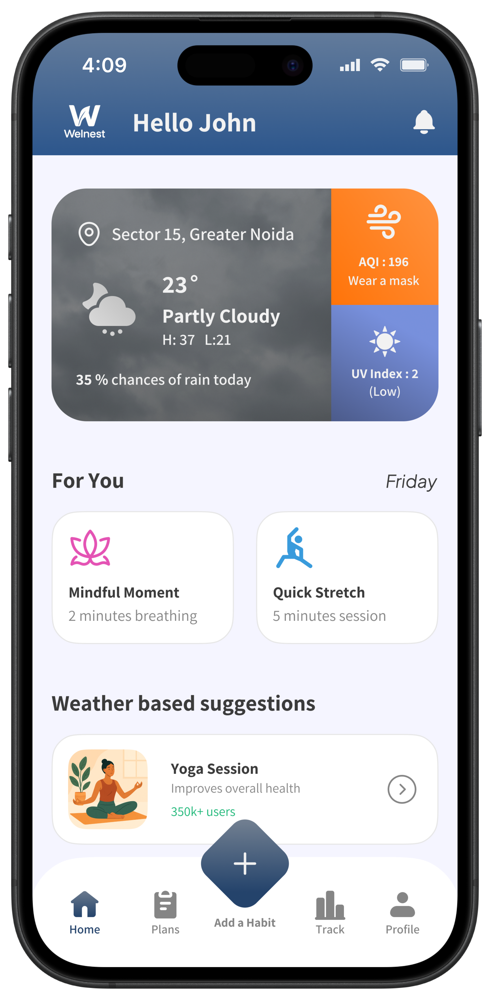

UX Design Portfolio
SHREYAN DIXIT
As a passionate UX designer, I specialize in building seamless, user-centered experiences that are accessible, inclusive, and intuitive. Through thoughtful research, creative insights, and iterative testing, I ensure every design decision aligns with actual user needs. My work is rooted in problem-solving and elevating the overall user journey.

Education
Bachelor of Design
Symbiosis Institute of Design
Senior Secondary Education
Sant Atulanand Convent School
Software Skills
Design Skills
My Projects

Metro Lost & Found App
Project Duration : 6 - 12 MonthsProject Overview
It started with a simple question: Why is finding a lost item on the metro so difficult? From confusing procedures to delayed updates, the current system leaves users anxious and helpless.
This app reimagines the experience – allowing users to report items seamlessly, even on behalf of someone else, with smart categorization and real-time tracking. What was once a frustrating process becomes simple, inclusive, and fast.

Project Overview
Project Duration : 1-2 MonthsGujarati Meenakari artisans have long created stunning handmade pieces, but lacked digital visibility. This project brings their craft online through an e-commerce platform designed to showcase their work, connect them with buyers, and support direct sales – bridging tradition with modern reach.

Vibe Discovery App
Project Duration : 1 MonthProject Overview
Watch Your Steps is a strategic redesign of the Nike mobile app, aimed at enhancing the overall user experience for sneaker enthusiasts. The app introduces a multi-brand storefront, allowing users to explore and shop beyond Nike's catalog.
With features like authenticity checks, seamless browsing, and an intuitive UI, the platform ensures users make informed and trustworthy purchases – all within a unified, single-tap ecosystem.

SneakScan
Project Duration : 3 - 6 MonthsProject Overview
SneakScan is a mobile app that gathers sneaker listings from platforms like StockX, Flight Club, etc. Letting users compare prices in real time, set alerts, and find the best deals easily.

Asian Hires Website
Project Duration : 6 MonthsProject Overview
This project involved designing the Asian Hires website from scratch, from research and content structuring to final UI design. The goal was to create a clean, credible, and user-friendly website that clearly communicates the brand and its services.

Habit Loop App
Project Duration : 3 MonthsProject Overview
This project involved designing the Asian Hires website from scratch, from research and content structuring to final UI design. The goal was to create a clean, credible, and user-friendly website that clearly communicates the brand and its services.
Hobbies / Interests
Apart from being a UX designer I'm also passionate about travelling and motorcycles.
Get in touch
Queries & Collaborations are always welcomed.